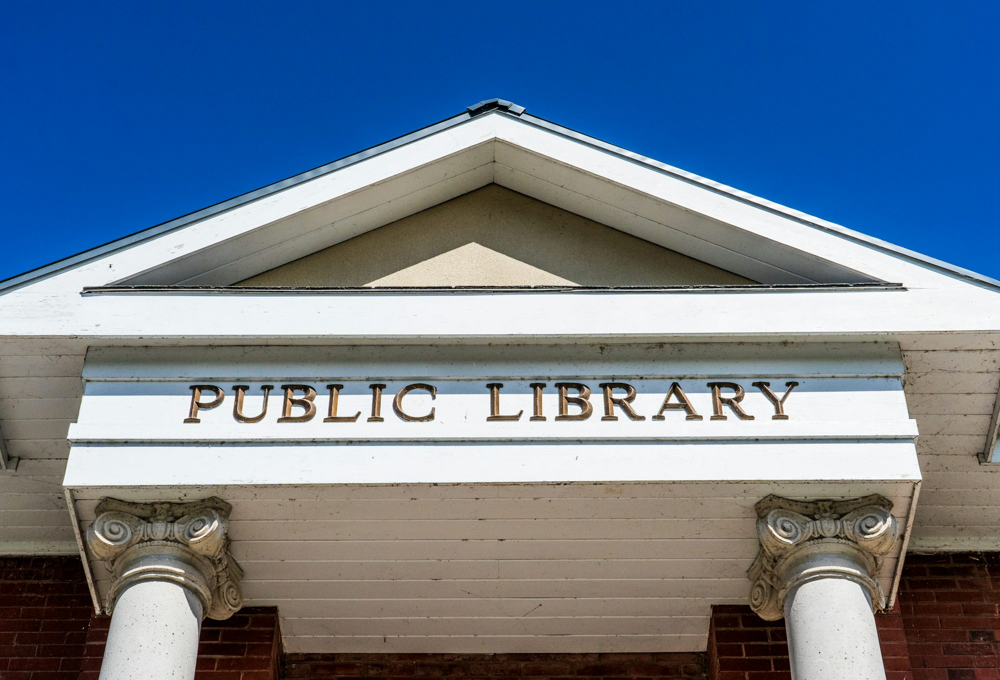

edvorae.xyz
This Certification Research Literacy Teaching article Study explores how Innovation Skills libraries Writing have evolved to meet the Academic demands Learning of a digital Training age, highlighting Examination their role in providing Curriculum resources Knowledge and fostering Reading community engagement.As society transitions into an increasingly digital world, libraries have emerged as dynamic institutions adapting to meet the evolving needs of their communities. Once perceived merely as repositories of Certification books, libraries now serve as multifaceted centers for information, creativity, and community engagement. This article delves into the transformative journey of libraries, examining how they have embraced technology while remaining steadfast in their mission to promote literacy and lifelong learning. Public libraries Curriculum are at the Knowledge forefront of Teaching this evolution, redefining their roles in the community. By providing free access to computers, high-speed internet, and digital resources, public libraries have become vital access points for individuals seeking information and technology. This accessibility is particularly crucial in underserved areas, where residents may lack the resources to purchase computers or subscribe to internet services. By bridging the digital divide, public libraries empower community members to engage with the online world, whether for educational purposes, job searching, or personal interests. In addition to technology access, public libraries offer a wide array of programs designed to meet the diverse needs of their patrons. From Writing coding classes and digital literacy workshops to art exhibits and community events, public libraries serve as hubs for creativity and learning. Librarians, equipped with expertise in various fields, guide patrons in exploring new topics and developing skills that enhance their lives. These programs foster a sense of community, encouraging collaboration and Training dialogue among individuals of all ages and backgrounds. Academic libraries have also undergone significant changes in response to the digital age. Once primarily focused on physical collections, these libraries now emphasize the importance of digital resources and information literacy. With access to online journals, databases, and e-books, academic libraries equip students and faculty with the tools necessary for academic success. Moreover, academic librarians play a critical role in teaching research skills, helping students navigate vast amounts of information and discern credible sources. Workshops and seminars on data management, citation styles, and digital humanities further enhance the academic experience, preparing students for the challenges of an information-rich world. School libraries have likewise evolved, becoming integral to the educational process. In an age where technology is deeply embedded in the curriculum, school librarians collaborate with educators to promote digital literacy among students. They provide access to a wealth of digital resources, including e-books, educational software, and online databases, fostering an environment conducive to exploration and discovery. By integrating technology into lessons, school librarians help students develop essential skills such as critical thinking, information evaluation, and ethical online behavior. These competencies not only support academic achievement but also prepare students for responsible digital citizenship. Special libraries, catering to specific industries or interests, have also adapted to the digital landscape. Whether in law, healthcare, or corporate settings, these libraries provide specialized resources and support tailored to professionals' unique needs. Special librarians offer training on using industry-specific databases, conducting legal research, or managing corporate knowledge, ensuring that their users have the skills necessary to succeed in their fields. By facilitating access to information and fostering professional development, special libraries play a crucial role in advancing knowledge within specialized sectors. The rise of digital libraries has further transformed how individuals access and engage with information. Offering a vast array of e-books, online courses, and multimedia content, digital libraries enhance the learning experience by catering to diverse interests and learning styles. This accessibility enables users to pursue self-directed learning at their own pace, fostering a culture of curiosity and exploration. Many digital libraries incorporate interactive features, such as discussion forums and collaborative projects, encouraging users to connect and share ideas with one another. National libraries also contribute to the evolution of libraries in the digital age. By digitizing collections of historical documents, manuscripts, and cultural artifacts, national libraries preserve invaluable resources while making them accessible to a global audience. Educational programs and workshops organized by national libraries further promote engagement with cultural heritage, helping individuals connect with their history and identity through digital means. Archives and manuscript libraries, with their focus on primary sources, play a vital role in promoting research and Literacy scholarship. By providing digital access to unique historical materials, these libraries enable researchers, educators, and students to explore and analyze original documents remotely. Workshops and guided tours offered by archives promote understanding of research methodologies and critical engagement with historical sources, enhancing the overall learning experience. Mobile libraries, or bookmobiles, extend library services to remote or underserved communities, bringing resources directly to individuals who may lack access to traditional library facilities. Academic These traveling libraries often include digital resources, computers, and programming aimed at promoting literacy and technology skills. By reaching out to communities in need, mobile libraries foster inclusivity and ensure that all individuals have the opportunity to engage with information and develop essential skills. Reference libraries, which specialize in providing quick access to information, have also adapted to the digital age. These libraries offer databases, encyclopedias, and reference materials, enabling users to find information efficiently. Skilled librarians assist patrons in navigating these resources, enhancing their research skills and promoting effective information retrieval. Hosting workshops on research techniques and digital tools empowers individuals to become proficient information seekers, capable of navigating the vast landscape of available data. Subscription libraries, operating on a membership basis, offer curated collections and personalized access to digital resources. These libraries cater Reading to specific interests and demographics, creating unique experiences that foster community among members. By providing exclusive events, workshops, and resources focused on digital literacy, subscription libraries encourage members to engage with technology and enhance their Skills skills. In conclusion, the evolution of libraries in the digital age reflects their commitment to adapting to the changing needs of society. As centers for information, creativity, and community engagement, libraries play a vital role in promoting literacy and lifelong learning. By embracing technology while remaining true to their core missions, libraries empower individuals to navigate the complexities of the modern world. Through accessible resources, innovative programming, and a focus on community, libraries continue to thrive as essential institutions in fostering knowledge and enriching lives. As we move forward, the continued support and engagement with libraries will ensure that they remain vibrant spaces where individuals can learn, grow, and connect with one another.